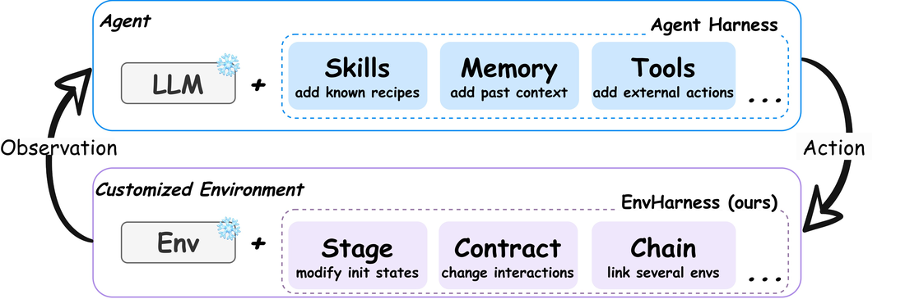
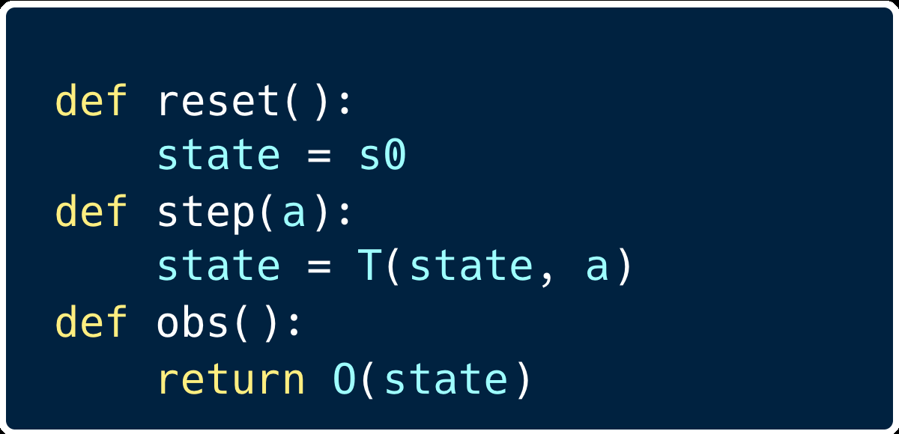
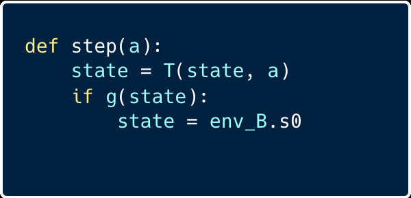
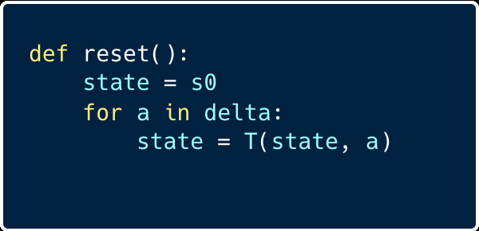
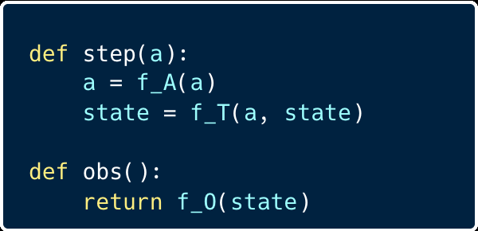
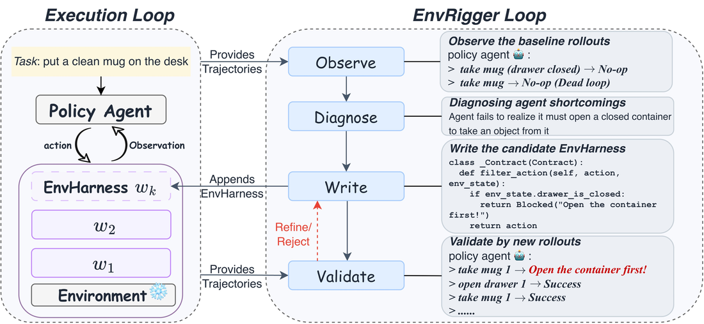
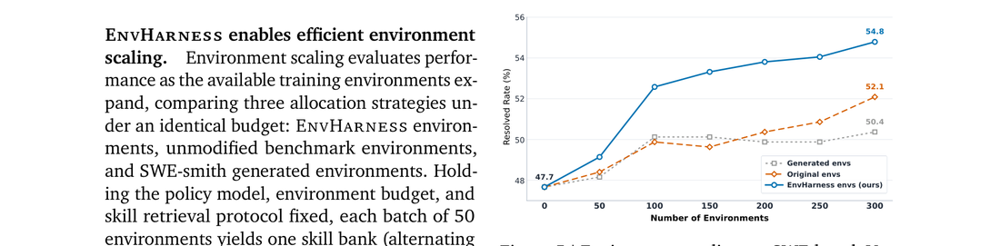
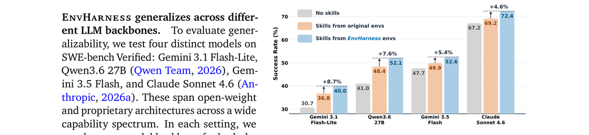

LLM agents通过与环境交互来学习，但这些环境是手工构建且静态的：对agent的弱点视而不见、随agent进步很快被甩下。Google提出EnvHarness：一个可编程的插拔组件层，包装静态环境、仅通过标准接口重塑其行为而不改动底层逻辑，并确保重塑后的每个环境都保留原有verifier。
配合EnvRigger把目标策略当黑盒、观察其执行轨迹合成针对已诊断缺陷的组件、用新rollout验证：自动化整个定制过程。5个基准4个领域上EnvHarness同时胜过原始环境和领域专属生成管线，最高提升9.0分且执行步数少9.8%。
随着LLM被部署为自主agents，学习来源从精选文本数据转向交互环境。无论浏览网页、解决代码库问题还是控制具身平台，agents依赖各自环境获取学习信号。这些环境作为交互对等体呈现具体任务、管理变化状态、响应动作、评估成功。不幸的是，构建它们需要大量人工硬编码交互逻辑和verifier。
结果是环境保持刚性静态，无论哪个agent交互或该agent进步多少，行为都一样。这种刚性从两方面限制agent学习：① 无法提供针对特定agent弱点的定向信号；② 一旦agent学会解决现有任务就没更多可教的。
手动建环境昂贵，环境生成工作逐渐兴起，但有两个局限：① 生成管线本质领域专属（网页导航/编程/工具使用各一，不可互转）；② 保证正确性昂贵且不可靠（环境和verifier由LLM生成，实践需过度生成+重重过滤，仍不能完全保证正确）。
EnvHarness换个思路：不创造新环境，而是把一个现有静态环境通过可编程层转成动态定制环境、不修改环境本身。与agent harness类比（Figure 2）：agent harness给LLM提供外部记忆、工具、技能处理超文本生成的任务；EnvHarness把这个概念延伸到环境，给静态环境配模块化插拔组件。
agent harness（Anthropic/OpenAI）是包裹LLM形成自主agent的软件层（执行循环、工具注册、上下文管理），Agent = Model + Harness，不改变模型权重新增能力。EnvHarness把同一思想用于agent-环境循环的另一侧：Customized Env = Static Env + EnvHarness，通过修改标准接口的信息流实现定制，底层环境完全不碰。

形式化：环境是元组（状态空间S、动作空间A、观察空间O、转移函数T、奖励R、初始状态s0）。EnvHarness组件是环境无关的变换w，E' = w(E)，只在接口层重塑：定制初始状态、过滤暴露的空间、更新转移机制。因所有干预都在外部，地面真值评估逻辑保留、原verifier仍可给episode打分。

Stage：改初始状态。由状态操作动作序列指定，应用于reset() 产生的初始状态：引入需特定技能解决的障碍或提前完成子目标缩短任务视界。例：执行「拿杯1、开抽屉1、放杯进抽屉、关抽屉」把杯子藏起来，逼agent先搜索而非直接拿。

Contract：重写交互。三个变换映射（动作空间/转移动态/观察空间，默认恒等），强制动作前置条件、增/掩观察、给特定结果附结构化反馈以引导学习。例：截断房间描述到两句（要agent多步构建空间表征）、阻塞没拿杯时的clean动作、移除高级传送命令逼逐步移动搜索。
Chain：扩展环境。把附加环境和一个组合逻辑配对，组合成单一复合环境。允许跨环境组合（空间取并集、奖励是复合），组合逻辑可连接/交错/基于中间结果动态分支。例：追加「热土豆放台面」，要求agent把目标带过本会停止的点。
叠加组合：所有组件共享标准接口、可自由组合。但变换不可交换（w1∘w2 ≠ w2∘w1），嵌套顺序决定环境如何构建、初始化还是交互期应用哪些约束。
Figure 3对比三种组件与原始接口，高亮每个组件override的方法（reset/step/obs），代码块展示各wrapper如何改状态初始化、转移动态或观察处理而不改基础环境。

图3从左到右：基础environment后跟三个EnvHarness组件：Stage（改初始状态）、Contract（改交互接口）、Chain（组合复合任务）。高亮箭头和标题指示被override的接口方法。

EnvHarness是通用框架，但具体配置须针对每个目标策略和任务定制。EnvRigger自动化该过程：严格把策略当黑盒、观察基础环境中的成功与失败执行轨迹、诊断具体行为漏洞。基于发现合成候选EnvHarness组件、包裹当前环境评估；跑新策略rollout、仅当候选环境有效培养缺失能力且仍可解时接受。失败组件迭代修订直到成功：实现全自动、任务-策略条件化的环境定制。

Observe（观察）：在基础任务上跑策略收集一批rollout轨迹。失败暴露要解决的弱点，成功定义缺陷边界（哪些能力已完好、从哪开始失败）。
Diagnose（诊断）：分析轨迹找行为的根因，聚焦系统性问题（重复动作循环、解析长观察失败、误读工具约束）。诊断决定定制方向：挣扎的策略→搭脚手架、简化任务；完美成功率→环境太宽容、应做难注入更挑战场景逼出潜在缺陷。输出文本诊断。
Write（写）：基于诊断合成一个或多个组件针对已识别缺陷。单缺陷可能需组合多组件（如Stage改初始态 + Contract过滤后续交互）。若诊断发现策略依赖绕过学习的脆弱捷径，可写Contract在特定条件下阻塞该动作、逼策略探索掌握目标技能。
Validate（验证）：包裹当前环境实例化E'、跑新rollout，基于成功率/失败分布等轨迹指标三选一：接受候选、拒绝（不可解或不具挑战性）、精炼（信号缩放差）。需精炼则轨迹与缩放反馈回流Write阶段，重复Write-Validate循环直到接受或修订预算耗尽。接受组件加入EnvHarness。
5基准4域：ALFWorld（文本具身）、WebArena（网页交互）、SWE-bench Verified（软件工程）、OfficeQA + SpreadsheetBench（办公自动化）。报告各基准原生指标 + SWE-bench平均步数（执行效率）。训练/评估episode严格不相交。
每个基准EnvRigger和政策agent用同一模型骨干（ALFWorld/WebArena用Gemini-3.1-Flash-Lite、其余Gemini-3.5-Flash），确保性能提升非蒸馏更强外部模型。在训练集跑EnvRigger优化循环生成定制环境，用ReasoningBank从轨迹提取技能、在held-out实例上评估。自动管线排除Chain（EnvRigger难观察连接环境的内部状态），Chain效果在分析节单独评估。
对比4个技能来源：No Skills（冻结策略）、Original Envs（原环境技能隔离重塑效果）、以及各基准的领域生成基线（GenEnv/VeriEnv/SWE-smith）。所有基线共享同seed实例、环境数、提取管线、策略模型。
| Skill Source | ALFWorld In-Dist | ALFWorld OOD | ALFWorld Avg | WebArena Avg |
|---|---|---|---|---|
| No Skills | 62.6 | 60.7 | 61.7 | 38.7 |
| Original Envs | 63.3 | 61.4 | 62.4 | 38.5 |
| GenEnv | 63.3 | 61.9 | 62.6 | – |
| VeriEnv | – | – | – | 39.6 |
| EnvHarness Envs | 66.2 | 70.4 | 68.3 | 41.6 |
| Improvement | +2.9 | +9.0 | +5.9 | +3.1 |
EnvHarness在静态环境做不到的地方给出一致增益。每个基准上从定制环境获得的技能一致胜过原环境提取的：ALFWorld最高 +9.0分；而静态基础环境提取技能反而可能掉：SpreadsheetBench上非修饰环境技能低于无技能基线、SWE-bench上拉长执行轨迹。因为静态环境只让agent练它已会的行为、无法针对其特局限，常检索冗余或次优技能。EnvRigger的write-and-validate循环只提交经新策略轨迹验证的组件、保证EnvHarness每基准都优于无技能基线。
跨域推广靠域无关接口：接口协议、EnvRigger循环、技能提取管线在5基准一致适用，只需域特定prompt模板适配。而领域生成基线被锁在自己目标基准（表里其他域为「–」）。ALFWorld上EnvHarness平均超GenEnv 5.7点、OOD超8.5点；SWE-bench上超专用SWE-smith SR 2.46点且每episode少5.11步。针对已诊断缺陷的统一接口胜过领域生成只扩训练episode数量。
效率：SWE-bench上EnvHarness技能把平均steps/episode从53.6降到49.6，而未修饰环境反增到55.0：增益直接对应EnvRigger诊断：阻断重复动作循环、过滤冗长观察的定向Contract/Stage成功缩短执行轨迹。
RL更好：用Qwen3-8B + GRPO在ALFWorld/WebShop上对比「仅在原始环境训练」vs「仅在EnvHarness环境训练」。EnvHarness四指标三项胜出：ALFWorld域内SR 87.9 vs 81.4、WebShop score 79.2 vs 75.6、SR 67.4 vs 66.0（唯一小损是ALFWorld OOD 88.8 vs 89.6）。重塑环境不只是辅助数据、而是在线策略学习的高效独立优化信号。

高效环境缩放：同预算下对比EnvHarness / 未修改基准环境 / SWE-smith生成环境。关键：两基线独立于学习者取环境批次，EnvHarness每批专门针对装了此前累积技能的策略合成→环境与策略共同演化。EnvHarness从47.67爬到54.79（+7.12点）且300环境仍上涨，同预算原环境仅52.13、生成环境50.37。针对学习者当前能力边界比无条件缩放更有效。

跨LLM骨干通用：4模型（Gemini 3.1 Flash-Lite、Qwen3.6 27B、Gemini 3.5 Flash、Claude Sonnet 4.6）横跨开源/专有、宽能力谱。每处EnvHarness技能胜真实环境技能2.7-3.7绝对点，增益大小与底层策略强弱基本无关（30.7→67.2无技能成功率都适用）：定制循环最弱模型不崩、最强模型不饱和。能力级改变的是诊断内容而非循环适用性。
Chain长视界：把两个随机配对基础环境连成扩展episode。单用Chain技能把平均步数从53.58猛降到41.96（SR 49.63略低于49.88基线，因要求两半都解、牺牲短任务最大化换长目标保持）。组合Stage/Contract + Chain两全：最高SR 54.30 + 高效43.12步。
按需定制：EnvRigger也接受显式用户约束：定量目标（成功率/平均步数）或自然语言描述的弱点。如给「策略不跑测试就提交补丁」的弱点，EnvRigger生成Contract拒绝不先跑测试的提交、逼agent验证修复。技能提炼成「先确认失败存在→跑补丁后再验」的验证驱动开发循环。
| ALFWorld In-Dist SR | ALFWorld OOD | WebShop Score | WebShop SR | |
|---|---|---|---|---|
| Original Envs | 81.4 | 89.6 | 75.6 | 66.0 |
| EnvHarness Envs | 87.9 | 88.8 | 79.2 | 67.4 |
环境缩放供给agents更多环境（LLM模拟环境/反馈、世界模型模拟一族环境、程序化合成可执行环境、在现有基准内合成新任务实例）；另一条线适配环境向学习者呈现的内容（RL课程生成、手设计正反馈）。与依赖基准专属管线或手设计课程不同，EnvHarness通过跨基准共享的接口重塑现有环境、把重塑条件化在当前策略的已诊断弱点、任务和verifier不动。
自演化agents从自身经验改进：演化prompt/反思、技能/工作流库、经验记忆、模型权重、甚至agent harness。这些在学习的世界上固定时演化agent；EnvHarness反过来针对冻结策略的已诊断弱点重塑环境本身。
结论：EnvHarness把静态现有环境转成可控环境，用Stage/Contract/Chain三插拔组件、完全通过标准reset/step接口重塑：可隔离技能、扩展任务视界、校准难度。因从不碰内部代码、单一实现在不同域无缝工作；因任务不变、每个重塑环境安全保留可信的人类verifier。EnvRigger是自动循环：从执行轨迹诊断策略弱点、合成定向组件提供精确学习信号。这把环境构建重新框定为包装问题而非创作问题，指向可扩展的环境供给道路。
参考：https://arxiv.org/pdf/2608.19880